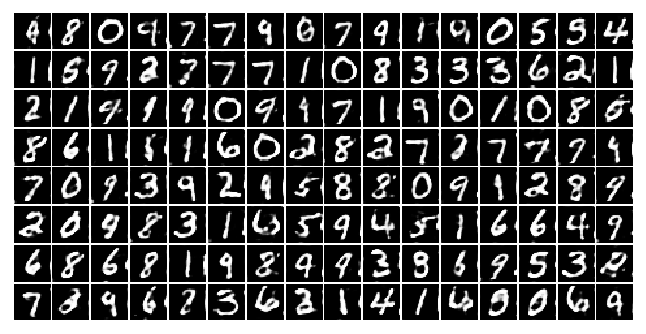

PaddlePaddle 飞桨实现GAN生成对抗网络生成MINIST手写数字图像
import paddle |
/opt/conda/envs/python35-paddle120-env/lib/python3.7/site-packages/paddle/fluid/layers/utils.py:26: DeprecationWarning: `np.int` is a deprecated alias for the builtin `int`. To silence this warning, use `int` by itself. Doing this will not modify any behavior and is safe. When replacing `np.int`, you may wish to use e.g. `np.int64` or `np.int32` to specify the precision. If you wish to review your current use, check the release note link for additional information.
Deprecated in NumPy 1.20; for more details and guidance: https://numpy.org/devdocs/release/1.20.0-notes.html#deprecations
def convert_to_list(value, n, name, dtype=np.int):
/opt/conda/envs/python35-paddle120-env/lib/python3.7/site-packages/matplotlib/__init__.py:107: DeprecationWarning: Using or importing the ABCs from 'collections' instead of from 'collections.abc' is deprecated, and in 3.8 it will stop working
from collections import MutableMapping
/opt/conda/envs/python35-paddle120-env/lib/python3.7/site-packages/matplotlib/rcsetup.py:20: DeprecationWarning: Using or importing the ABCs from 'collections' instead of from 'collections.abc' is deprecated, and in 3.8 it will stop working
from collections import Iterable, Mapping
/opt/conda/envs/python35-paddle120-env/lib/python3.7/site-packages/matplotlib/colors.py:53: DeprecationWarning: Using or importing the ABCs from 'collections' instead of from 'collections.abc' is deprecated, and in 3.8 it will stop working
from collections import Sized
train_reader = paddle.vision.datasets.MNIST(mode='train') |
训练集样本数: 60000
样本形状: (28, 28)
标签形状: (1,)
|
image,label =next(mnist_generator()) |
/opt/conda/envs/python35-paddle120-env/lib/python3.7/site-packages/paddle/fluid/dataloader/dataloader_iter.py:89: DeprecationWarning: `np.bool` is a deprecated alias for the builtin `bool`. To silence this warning, use `bool` by itself. Doing this will not modify any behavior and is safe. If you specifically wanted the numpy scalar type, use `np.bool_` here.
Deprecated in NumPy 1.20; for more details and guidance: https://numpy.org/devdocs/release/1.20.0-notes.html#deprecations
if isinstance(slot[0], (np.ndarray, np.bool, numbers.Number)):
图像数据形状和对应数据为: [128, 28, 28]
图像标签形状和对应数据为: [128, 1]
W0511 14:09:22.929143 892 device_context.cc:362] Please NOTE: device: 0, GPU Compute Capability: 7.0, Driver API Version: 11.2, Runtime API Version: 10.1
W0511 14:09:22.933797 892 device_context.cc:372] device: 0, cuDNN Version: 7.6.
/opt/conda/envs/python35-paddle120-env/lib/python3.7/site-packages/matplotlib/cbook/__init__.py:2349: DeprecationWarning: Using or importing the ABCs from 'collections' instead of from 'collections.abc' is deprecated, and in 3.8 it will stop working
if isinstance(obj, collections.Iterator):
/opt/conda/envs/python35-paddle120-env/lib/python3.7/site-packages/matplotlib/cbook/__init__.py:2366: DeprecationWarning: Using or importing the ABCs from 'collections' instead of from 'collections.abc' is deprecated, and in 3.8 it will stop working
return list(data) if isinstance(data, collections.MappingView) else data
<function matplotlib.pyplot.show(*args, **kw)>
/opt/conda/envs/python35-paddle120-env/lib/python3.7/site-packages/matplotlib/image.py:425: DeprecationWarning: np.asscalar(a) is deprecated since NumPy v1.16, use a.item() instead
a_min = np.asscalar(a_min.astype(scaled_dtype))
/opt/conda/envs/python35-paddle120-env/lib/python3.7/site-packages/matplotlib/image.py:426: DeprecationWarning: np.asscalar(a) is deprecated since NumPy v1.16, use a.item() instead
a_max = np.asscalar(a_max.astype(scaled_dtype))
##测试一下噪声 |
一个batch噪声z的形状： [128, 100, 1, 1]
GAN 网络
GAN 性能的提升从生成器 G 和判别器 D 进行左右互搏、交替完善的过程得到的。所以其 G 网络和 D 网络的能力应该设计得相近，复杂度也差不多。这个项目中的生成器，采用了两个全链接层接两组上采样和转置卷积层，将输入的噪声 Z 逐渐转化为 1×28×28 的单通道图片输出。
生成器结构：

判别器的结构正好相反，先通过两组卷积和池化层将输入的图片转化为越来越小的特征图，再经过两层全链接层，输出图片是真是假的二分类结果。
判别器结构：

import paddle |
paddle.Model(G('G')).summary((-1,100)) |
---------------------------------------------------------------------------
Layer (type) Input Shape Output Shape Param #
===========================================================================
Linear-1 [[1, 100]] [1, 1024] 103,424
BatchNorm-1 [[1, 1024]] [1, 1024] 4,096
Linear-2 [[1, 1024]] [1, 6272] 6,428,800
BatchNorm-2 [[1, 6272]] [1, 6272] 25,088
Conv2D-1 [[1, 128, 14, 14]] [1, 64, 14, 14] 204,864
BatchNorm-3 [[1, 64, 14, 14]] [1, 64, 14, 14] 256
Conv2D-2 [[1, 64, 28, 28]] [1, 1, 28, 28] 1,601
===========================================================================
Total params: 6,768,129
Trainable params: 6,738,689
Non-trainable params: 29,440
---------------------------------------------------------------------------
Input size (MB): 0.00
Forward/backward pass size (MB): 0.31
Params size (MB): 25.82
Estimated Total Size (MB): 26.13
---------------------------------------------------------------------------
{'total_params': 6768129, 'trainable_params': 6738689}
paddle.Model(D('D')).summary((-1,1,28,28)) |
---------------------------------------------------------------------------
Layer (type) Input Shape Output Shape Param #
===========================================================================
Conv2D-3 [[1, 1, 28, 28]] [1, 64, 26, 26] 640
BatchNorm-4 [[1, 64, 26, 26]] [1, 64, 26, 26] 256
Pool2D-1 [[1, 64, 26, 26]] [1, 64, 13, 13] 0
Conv2D-4 [[1, 64, 13, 13]] [1, 128, 11, 11] 73,856
BatchNorm-5 [[1, 128, 11, 11]] [1, 128, 11, 11] 512
Pool2D-2 [[1, 128, 11, 11]] [1, 128, 5, 5] 0
Linear-3 [[1, 3200]] [1, 1024] 3,277,824
BatchNorm-6 [[1, 1024]] [1, 1024] 4,096
Linear-4 [[1, 1024]] [1, 1] 1,025
===========================================================================
Total params: 3,358,209
Trainable params: 3,353,345
Non-trainable params: 4,864
---------------------------------------------------------------------------
Input size (MB): 0.00
Forward/backward pass size (MB): 1.02
Params size (MB): 12.81
Estimated Total Size (MB): 13.83
---------------------------------------------------------------------------
{'total_params': 3358209, 'trainable_params': 3353345}
z_tmp = next(z_generator()) |
生成器G生成图片数据的形状： (128, 1, 28, 28)
判别器D判别生成的图片的概率数据形状： (128, 1)
[3.0552034]
import matplotlib.pyplot as plt |
网络训练
网络的训练优化目标就是如下公式：
公式出自 Goodfellow 在 2014 年发表的论文Generative Adversarial Nets。
这里简单介绍下公式的含义和如何应用到代码中。上式中等号左边的部分：
$V(D, G)$表示的是生成样本和真实样本的差异度，可以使用二分类（真、假两个类别）的交叉商损失。
$\max _{D} V(D,G)$表示在生成器固定的情况下，通过最大化交叉商损失$V(D, G)$来更新判别器 D 的参数。
$\min _{G} \max _{D} V(D, G)$表示生成器要在判别器最大化真、假图片交叉商损失$\max _{D} V(D,G)$的情况下，最小化这个交叉商损失。
等式的右边其实就是将等式左边的交叉商损失公式展开，并写成概率分布的期望形式。详细的推导请参见原论文《Generative Adversarial Nets》。
下面是训练模型的代码，有详细的注释。大致过程是：先用真图片训练一次判别器 d 的参数，再用生成器 g 生成的假图片训练一次判别器 d 的参数，最后用判别器 d 判断生成器 g 生成的假图片的概率值更新一次生成器 g 的参数，即每轮训练先训练两次判别器 d，再训练一次生成器 g，使得判别器 d 的能力始终稍稍高于生成器 g 一些。
for i, real_image in enumerate(mnist_generator()): |
[128, 28, 28] 128
训练代码
import paddle.nn.functional as F |
epoch = 0 , batch = 99 , real_d_loss = [0.63881606] , fake_d_loss = [0.43077955] g_loss = [1.1314435]
/opt/conda/envs/python35-paddle120-env/lib/python3.7/site-packages/matplotlib/image.py:425: DeprecationWarning: np.asscalar(a) is deprecated since NumPy v1.16, use a.item() instead
a_min = np.asscalar(a_min.astype(scaled_dtype))
/opt/conda/envs/python35-paddle120-env/lib/python3.7/site-packages/matplotlib/image.py:426: DeprecationWarning: np.asscalar(a) is deprecated since NumPy v1.16, use a.item() instead
a_max = np.asscalar(a_max.astype(scaled_dtype))
epoch = 0 , batch = 199 , real_d_loss = [0.4727745] , fake_d_loss = [0.40940467] g_loss = [1.1723493]

epoch = 0 , batch = 299 , real_d_loss = [0.3923043] , fake_d_loss = [0.38755333] g_loss = [1.2083172]
epoch = 0 , batch = 399 , real_d_loss = [0.3553782] , fake_d_loss = [0.3865837] g_loss = [1.2023909]
epoch = 1 , batch = 31 , real_d_loss = [0.30362654] , fake_d_loss = [0.3808377] g_loss = [1.22538]
epoch = 1 , batch = 131 , real_d_loss = [0.3126711] , fake_d_loss = [0.38687515] g_loss = [1.2130171]
epoch = 1 , batch = 231 , real_d_loss = [0.273176] , fake_d_loss = [0.37318167] g_loss = [1.2494049]
epoch = 1 , batch = 331 , real_d_loss = [0.40979803] , fake_d_loss = [0.4624972] g_loss = [1.1285127]
epoch = 1 , batch = 431 , real_d_loss = [0.5482184] , fake_d_loss = [0.4858724] g_loss = [1.1077986]
epoch = 2 , batch = 63 , real_d_loss = [0.5916477] , fake_d_loss = [0.5695666] g_loss = [0.9861771]
epoch = 2 , batch = 163 , real_d_loss = [0.6595901] , fake_d_loss = [0.54358363] g_loss = [1.0098863]
epoch = 2 , batch = 263 , real_d_loss = [0.7349342] , fake_d_loss = [0.5123524] g_loss = [1.0610704]
epoch = 2 , batch = 363 , real_d_loss = [0.88330436] , fake_d_loss = [0.51227736] g_loss = [1.0595765]
epoch = 2 , batch = 463 , real_d_loss = [0.83836365] , fake_d_loss = [0.53332305] g_loss = [0.99540174]
epoch = 3 , batch = 95 , real_d_loss = [0.86019707] , fake_d_loss = [0.53724575] g_loss = [0.9913846]
epoch = 3 , batch = 195 , real_d_loss = [0.8524647] , fake_d_loss = [0.5335064] g_loss = [1.0278957]
epoch = 3 , batch = 295 , real_d_loss = [0.90599334] , fake_d_loss = [0.5457525] g_loss = [0.9990233]
epoch = 3 , batch = 395 , real_d_loss = [0.7981782] , fake_d_loss = [0.539215] g_loss = [0.98800594]
epoch = 4 , batch = 27 , real_d_loss = [0.8963315] , fake_d_loss = [0.5651827] g_loss = [0.94507515]
epoch = 4 , batch = 127 , real_d_loss = [0.8121051] , fake_d_loss = [0.61096513] g_loss = [0.8886054]
epoch = 4 , batch = 227 , real_d_loss = [0.7931969] , fake_d_loss = [0.5683154] g_loss = [0.9184775]
epoch = 4 , batch = 327 , real_d_loss = [0.8052078] , fake_d_loss = [0.55665344] g_loss = [0.947585]

epoch = 4 , batch = 427 , real_d_loss = [0.9077438] , fake_d_loss = [0.52213967] g_loss = [0.9807905]
生成测试
z = next(z_generator()) |
 微信
微信 支付宝
支付宝